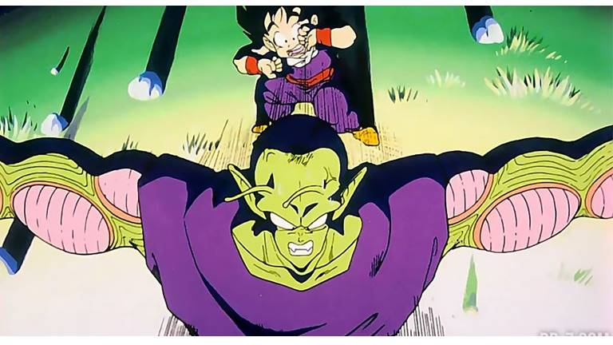
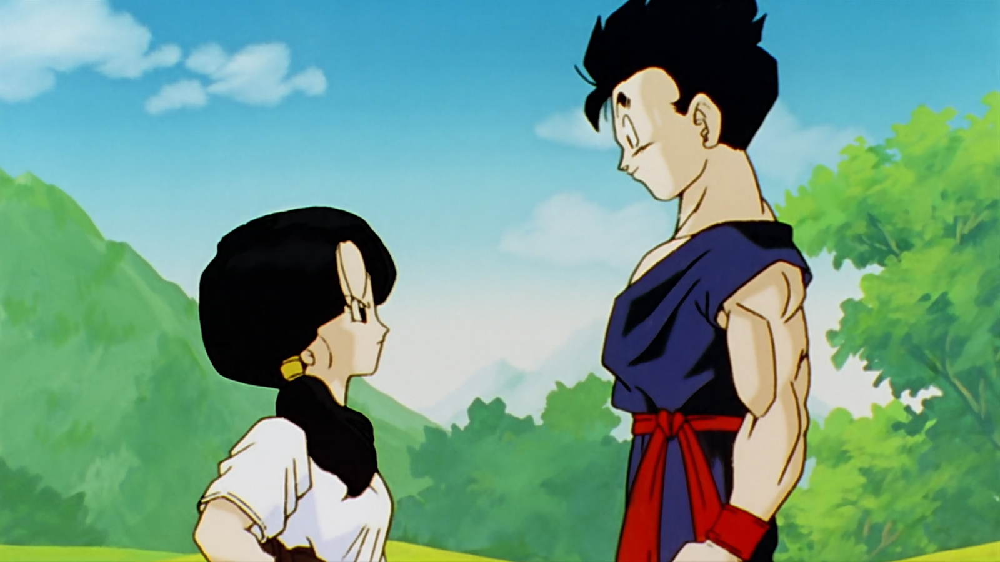

Sobre
Son Gohan é um dos personagens mais aclamados da série de onde vem. Filho do protagonista Son Goku, é uma das caras que marca Dragon Ball Z e é um dos principais membros do elenco da série.
Piccolo a sacrificar-se por Gohan.
As relações de Gohan
Apesar da relação que tem com o seu pai não ser a melhor, Gohan é constantemente ligado durante a série ao seu mentor, Piccolo, sendo que se tornam papéis importantes nas histórias um do outro. Outra das suas relações importantes aparece na última saga da série, quando Gohan entra para a faculdade e conhece Videl, que se viria a tornar a sua mulher.
Gohan ensina Videl a controlar o seu ki.
Ao longo da série Gohan teve alguns momentos marcantes, sendo alguns deles:
- Luta contra Raditz
- Treino com Piccolo
- Luta contra frieza
- Transformação em Super Guerreiro 2
- Transformação Mística e luta contra Buu
Gohan rouba os feijões mágicos ao Cell.